图文版说明书：怎么查、怎么录、怎么发给朋友。← 返回册子
30 秒上手：双击 index.html 打开册子 → 顶部选地图 → 「道具」页点一颗道具看图学投法 → 常用的点 ⭐ 收藏。打游戏时切到「战术板」页看地图点位，或用套装的「开战」一键连翻。
所有配图点击可放大。看不懂的地方按目录找对应章节。
打开后一共就两个大页签：战术板（默认，一张可点的地图）和道具（道具清单）。顶栏长这样：
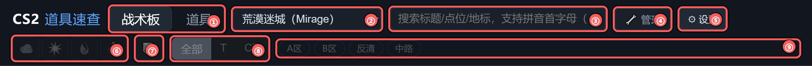
| 编号 | 是什么 | 怎么用 |
|---|---|---|
| ① | 战术板 / 道具 | 两个大页签。战术板=地图视角找点位；道具=清单视角逐条看。 |
| ② | 地图下拉 | 切换当前地图，册子记住上次选的。顺序可在 ⚙ 设置里调，第一位是打开时的默认图。 |
| ③ | 搜索框 | 支持中文、拼音全拼和首字母（比如打 jia 或 jjy 都能找到「警家烟」），多个词用空格隔开。按 / 键直接聚焦。 |
| ④ | 🔧 管理 | 查阅 / 管理两种模式的总开关（见 第⑦节）。每次打开默认查阅——平时只看不会误碰编辑按钮。 |
| ⑤ | ⚙ 设置 | 待办面板、地图排序、自定义筛选、导入导出都在这里（见 第⑪节）。 |
| ⑥ | 类型图标 | 烟 / 闪 / 火 / 雷，可多选，同时作用于道具列表和战术板地图。 |
| ⑦ | 📦 | 只看战术包（套装）视图，仅道具页显示。 |
| ⑧ | 阵营 | 全部 / T / CT。双方通用的道具在 T、CT 下都会显示。 |
| ⑨ | 自定义 chips | 自己在 ⚙ 设置里配的标签按钮（如 A区 / 反清），点一下=只看带该标签的道具，单选互斥，再点一下取消。在战术板页点它会自动切到道具页应用。 |
没激活任何筛选时，第二行筛选带是灰色的——不是坏了，是提示你「现在没筛选」；点任意筛选后该项恢复高亮。
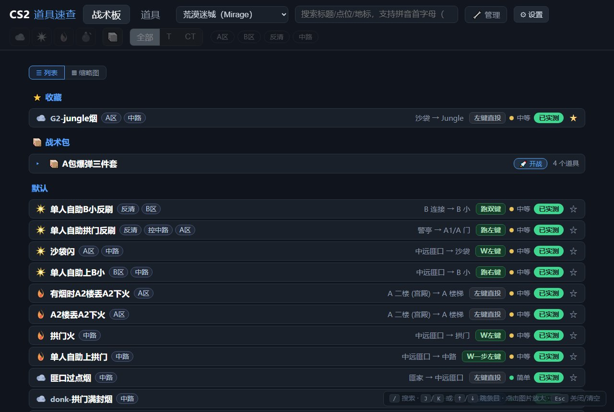
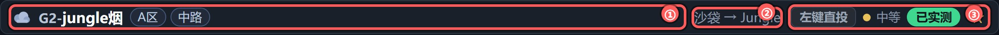
① 左簇：类型图标 + 标题 + 标签。标题里「名字-」开头的小字（如 flamez-、寒王-、Jame-）是这条道具的来源人物/战队——职业选手、UP 主或朋友的代号，中英文都算，一眼分清学的是谁的。② 中簇：从哪（起点）→ 扔到哪（目标）。③ 右簇：投法徽章（比如「左键跳投」，由键位×移动×投掷自动拼出，跳投蓝字 / 走位投绿字 / 原地直投灰字）、难度（色点+简单/中等/困难，点它=只看这一档）、状态和 ⭐ 收藏。
列表按分组排：⭐ 收藏置顶 → 📦 战术包折叠区 → 按使用阶段分组（默认 / 爆点 / 回防 / 防守 / 科研）。最底下有总数统计。
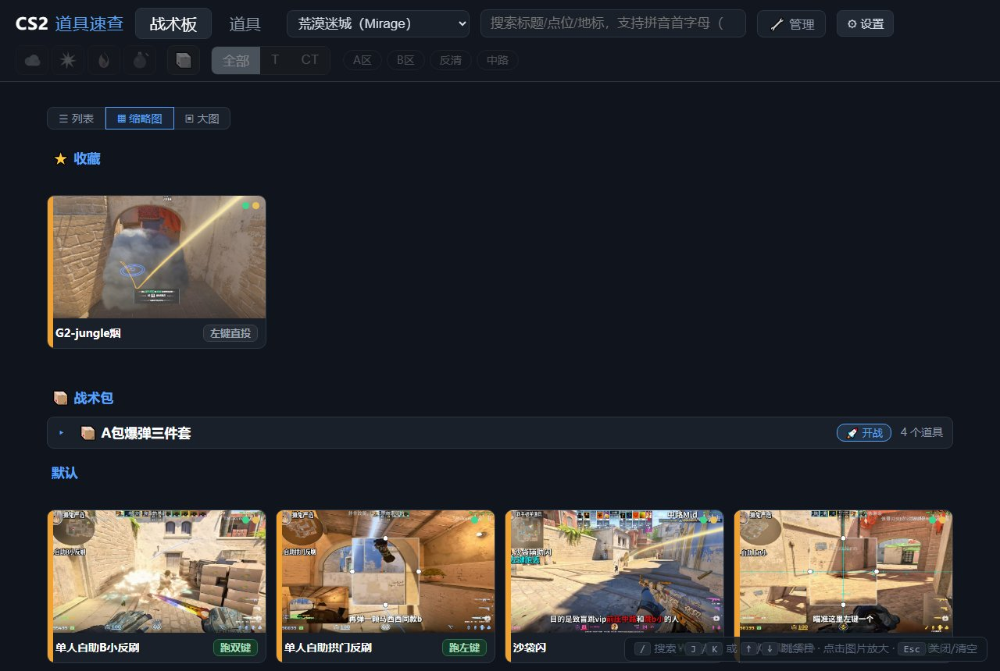
墙里每张卡片显示这条道具的落点&效果图（缺了就退回站位图）。点有图的卡片直接放大进入看图模式：滚轮缩放、拖拽移动、J/K 直接跳到上/下一条道具的图；点没图的卡片进详情。
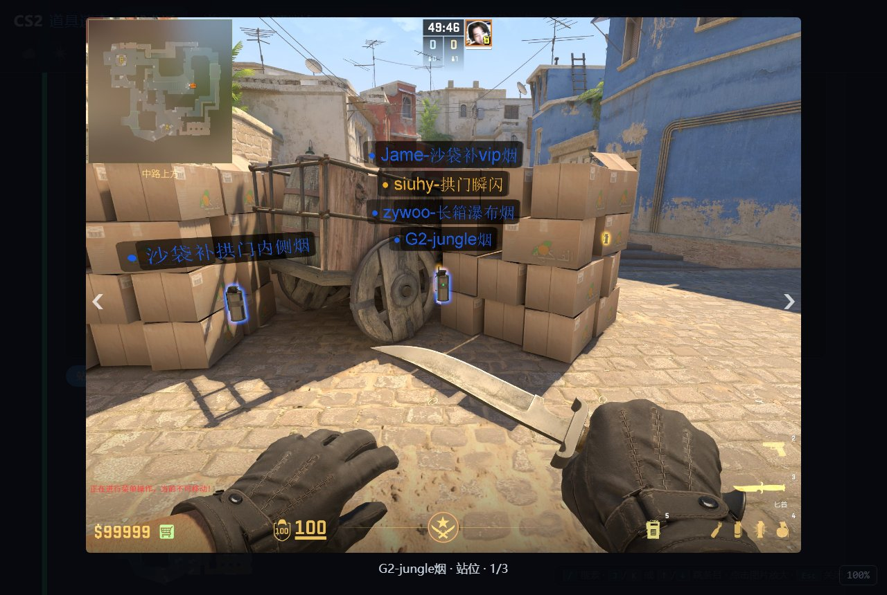
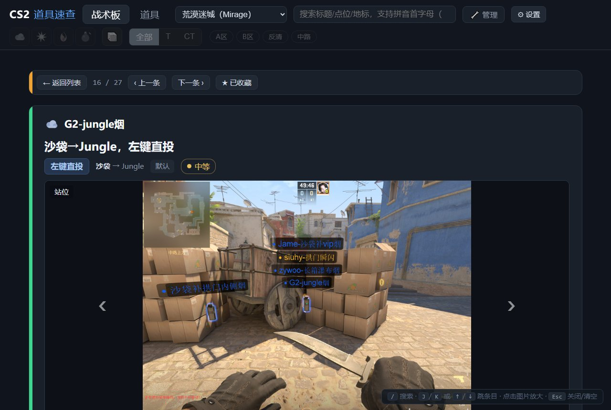
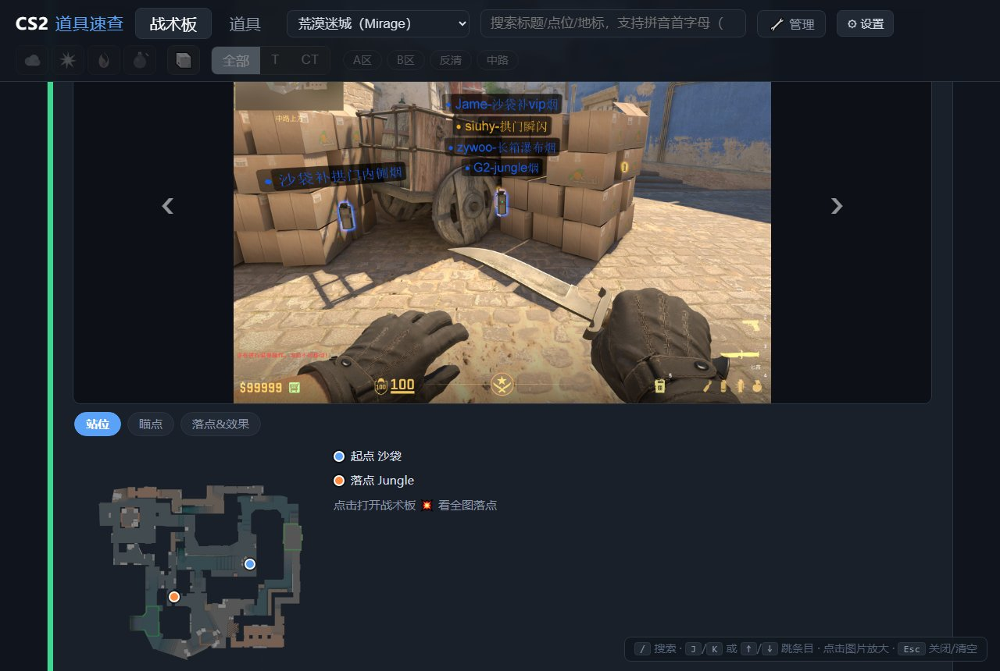
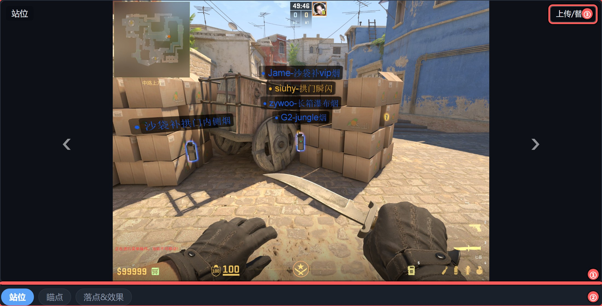
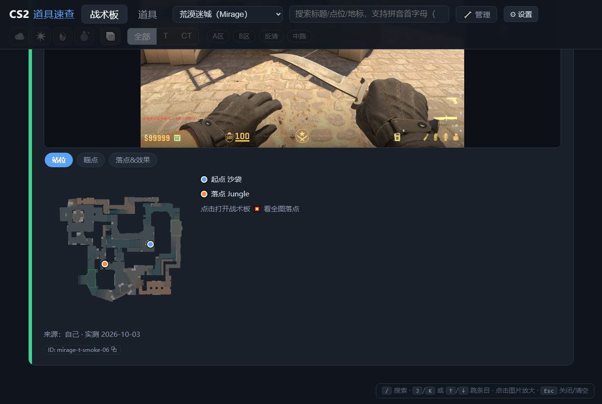
| 想找什么 | 怎么做 |
|---|---|
| 按名字 / 点位 | 搜索框直接打字，空格分词、多个词都要命中。支持拼音：jia（警家）、zhonglu 或 zl（中路）。 |
| 按难度 | 搜索 难度:简单 / 难度:困难（或 diff:easy 等）；列表里直接点难度徽章也一样。 |
| 按标签 | 点顶栏自定义 chips（A区 / 反清…）；词表在 ⚙ 设置「自定义筛选」里配。 |
| 按类型 / 阵营 | 顶栏烟闪火雷图标（多选）+ 全部/T/CT。 |
| 按报点点位 | 战术板页直接点地图上的地名，自动列出与该点相关的道具。 |
| 组合 | 以上全部条件同时生效（取交集），随便叠。 |
| 清空 | Esc 一路清掉筛选 / 弹层，最快。 |
失效/弃用的道具默认隐藏，⚙ 设置里「显示失效与弃用条目」打开后可见（橙色/灰色徽章）。
战术板页是一张可交互的地图，右上角切换三个图层：
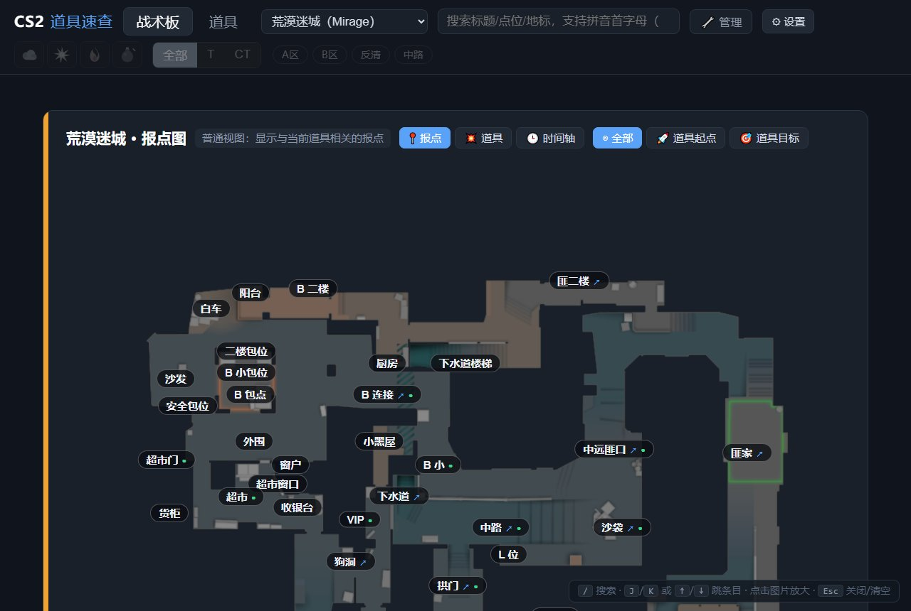
点任意地名＝列出与这个点位相关的道具（保留当前类型/阵营筛选）。「🚀 道具起点」模式：点地名看从这里能丢到哪；「🎯 道具目标」反向看谁能丢到这。「◎ 全部」回普通视图。
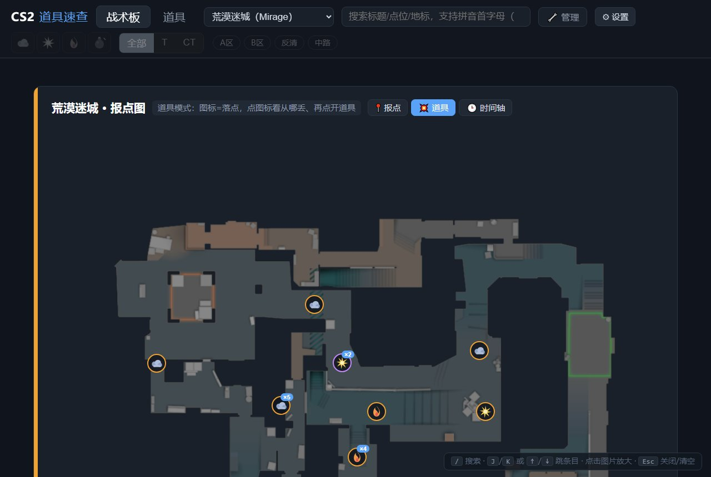
图标 = 道具的落点。点图标：显示从哪丢（虚线连到起点）+ 底部弹出道具清单，再点清单里的道具直达详情。类型/阵营/搜索等筛选全部联动。
✏️ 调点（管理模式）：报点管区域、道具点管精准位置。同一区域重叠的道具会自动散开，把图标拖到真实落点就记住了；选中后出现名称标签和起点白点手柄（也可拖），↺ 一键回报点位。没调过的道具停在报点中心，完全不影响使用。
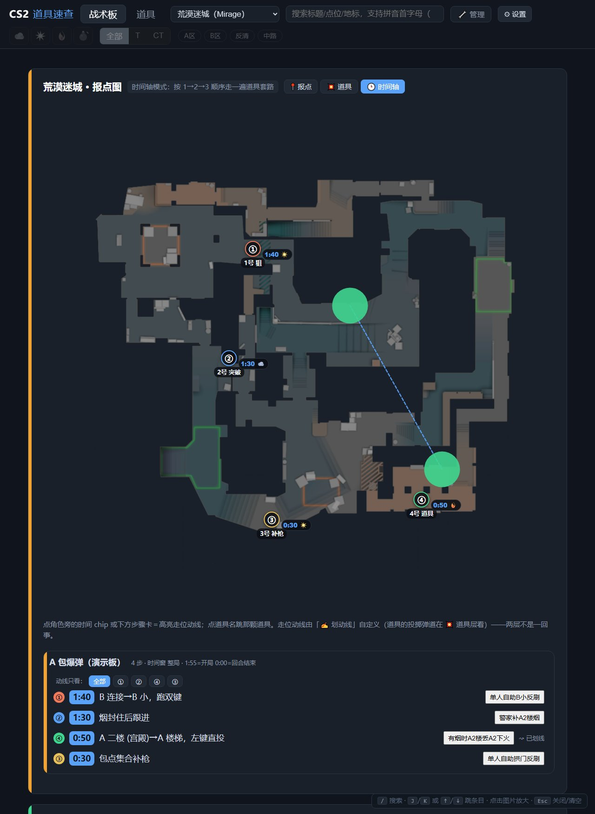
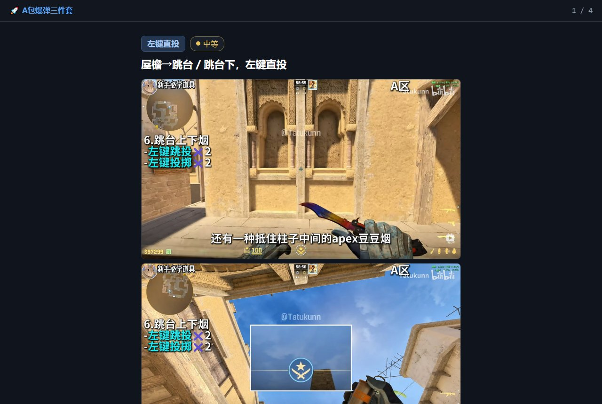
两个入口：道具列表里 📦 套装行的「🚀 开战」（按 烟→闪→火→雷 的顺序过一遍套路）、战术板卡上的 「🚀 按时间轴开战」（按时间轴顺序）。进入后：
建议：把副屏浏览器按 F11 全屏，翻卡更舒服；连翻不会翻过头，到头停住。
点顶栏 🔧 管理，所有录入与编辑入口就出现了：道具页工具栏的「＋ 新增道具 / 📥 分拣台」、详情页「编辑」、战术板「＋ 新增战术板 / ⚙ 编辑」等。再点一次 🔧 回到查阅模式，入口全部收起。
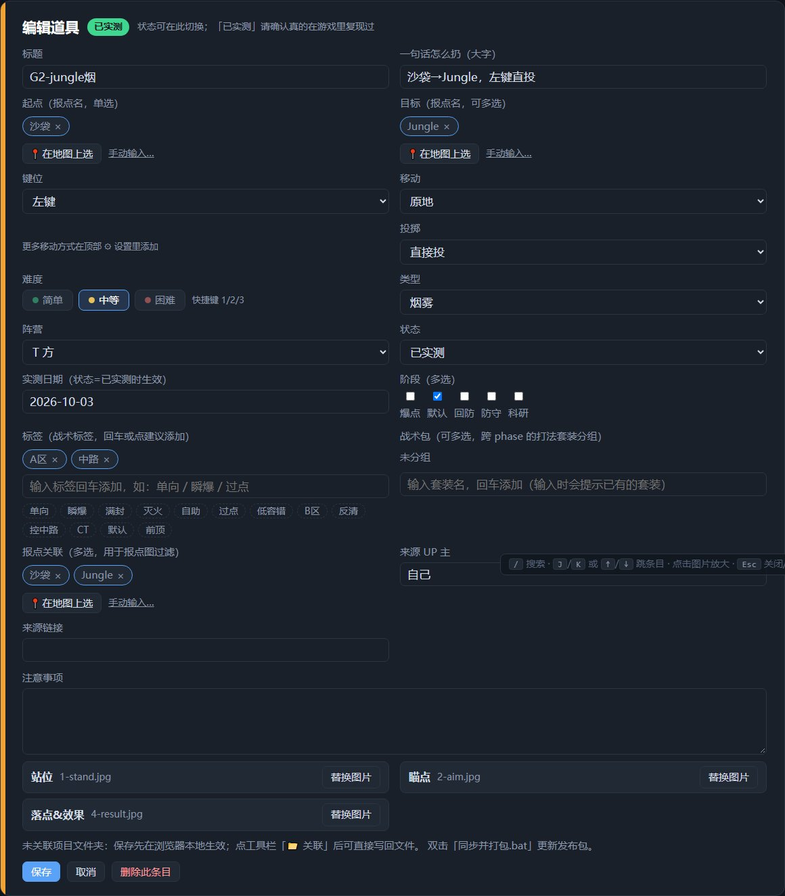
| 字段 | 填法 |
|---|---|
| 标题 / 一句话怎么扔 | 「一句话怎么扔」是卡片上最大的一行字，要能单独看懂：贴哪、瞄哪、怎么出手。 |
| 起点 / 目标 | 点「在地图上选」从报点里挑（支持拼音搜索），也可手输；目标可多选。起点/目标是搜索与钻取的关键，尽量用报点名。 |
| 键位 · 移动 · 投掷 | 三个下拉自动拼出投法徽章：左键/右键/双键 × 原地/蹲下/W/走一步/Shift/Shift+W/跑 × 直投/跳投/蹲跳投 → 如「左键跳投」「Shift+W·双键·跳投」「右键轻抛」。教学视频里说「左键跳投一颗」，照着填这三个字段就行。 |
| 难度 | 简单 / 中等 / 困难 三档（快捷键 123）。新建时按投法智能推荐，手动点过就以手动为准。 |
| 标签 / 战术包 | 标签=战术特征词（单向 / 瞬爆 / 反清 / A区…，回车添加，有建议列表）；战术包=自由命名的套装（如「A包爆弹三件套」），配 📦 只看和开战连翻。 |
| 报点关联 | 这条道具与哪些报点有关（多选），战术板钻取和点位过滤靠它。 |
| 来源 | 谁的视频/网页学的就填谁（UP 主+链接），署名随图永久保留；自己实测的就填「自己」。 |
待验证 橙色＝还没在游戏里复现过（视频学的、朋友给的都是它）；已实测 绿色＝自己进游戏扔成过，点状态徽章两段确认切换、自动记日期；已失效＝点位过时了别再练。没把握就先留橙色，别急着标绿。
一次录一批（比如从视频抽了一组图）用📥 分拣台（道具页工具栏，管理模式）。把素材截图放进项目根目录的「文件夹批量录入」，一个子文件夹＝一张图（如「文件夹批量录入/荒漠迷城/」），然后打开分拣台：
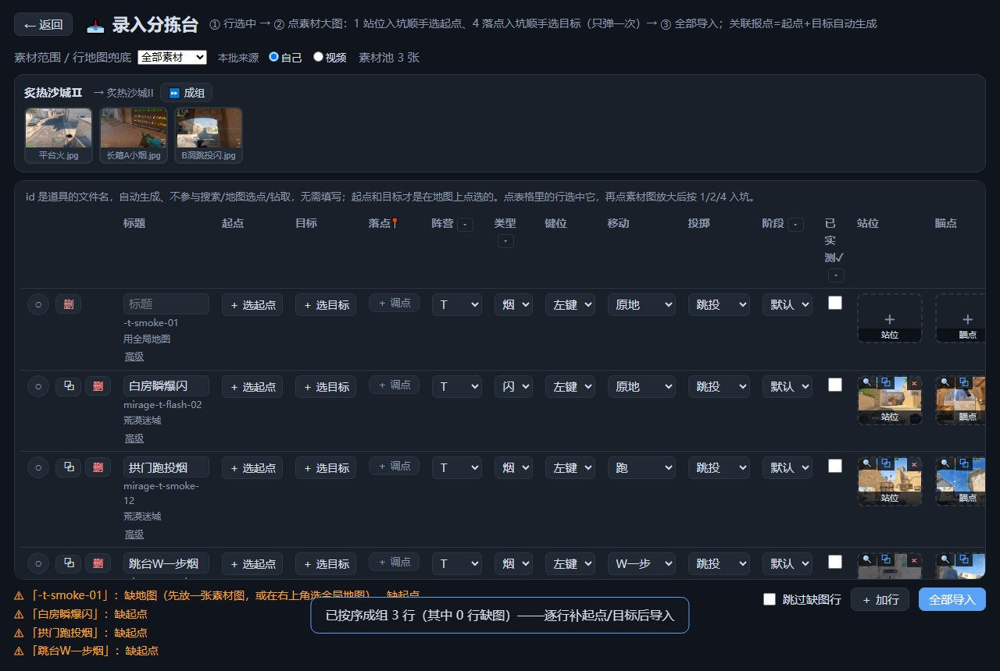
某组素材全部入册后，它的文件夹会自动搬进「已录入/」并重建空文件夹+说明文件——正常现象不是丢了。「已录入」的原图确认录完后可整个删除省空间，正式压缩图已经在册子里了。误关分拣台？重开会问你要不要恢复行草稿。
分两层，像「小抽屉 + 保险柜」：
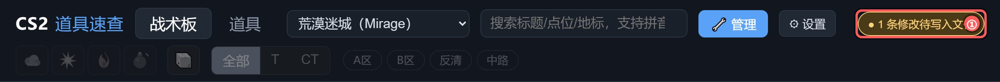
双击项目根目录的「同步并打包.bat」，它自动做三件事：
朋友拿到后解压、双击 index.html 就能用——不装任何环境。包里也带着这本手册（⚙ → 📖 使用说明）。
朋友导入的道具一律「待验证」，不会覆盖队长已实测的状态；重名道具自动加后缀不会互相覆盖。朋友的修改只存在他自己的浏览器里——录完记得及时导出分享留底。战术板不参与分享，各队各有各的打法。
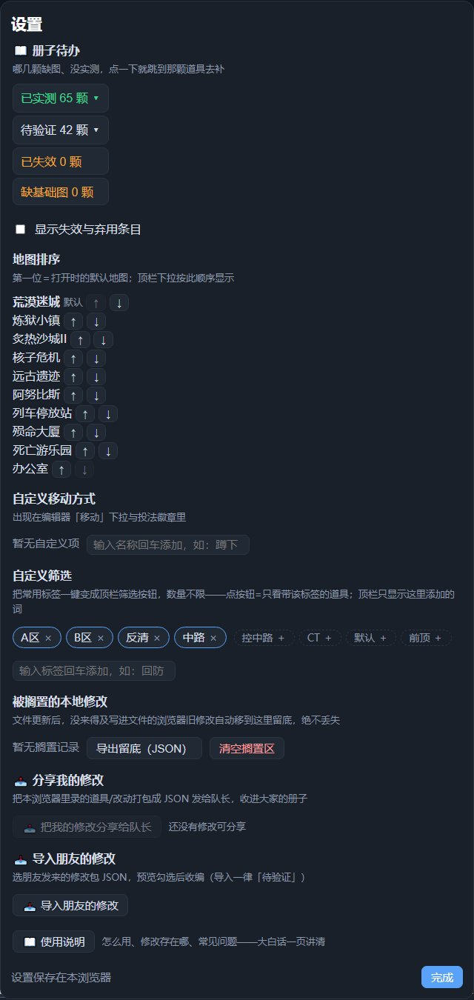
| 条目 | 说明 |
|---|---|
| 📖 册子待办 | 已实测/待验证/已失效/缺基础图 四组计数，点开直达对应道具去补图或实测。 |
| 显示失效与弃用条目 | 默认隐藏失效道具，勾上后列表可见（灰/红徽章）。 |
| 地图排序 | ↑↓ 调整顶栏地图顺序，第一位＝打开时的默认地图。 |
| 自定义移动方式 | 给「移动」下拉加自定义项（如「蹲下」），会出现在投法徽章里。 |
| 自定义筛选 | 把常用标签一键变成顶栏 chips 按钮，数量不限；顶栏只显示这里添加的词。 |
| 被搁置的本地修改 | 被新内容安全取代的旧修改都在这里留底，可导出 JSON、可两段确认清空。 |
| 📤 分享 / 📥 导入 | 见第⑩节。 |
| 📖 使用说明 | 就是本页。 |
| 按键 | 在哪 / 干什么 |
|---|---|
| / | 聚焦搜索框 |
| J K 或 ↑ ↓ | 列表里高亮步进，Enter 进详情 |
| ← → | 详情页上一条 / 下一条；lightbox 里切图 |
| Backspace | 详情页回列表 |
| [ ] | 详情页翻图槽位 |
| 滚轮 / 双击 | lightbox 缩放 / 复位 |
| 1 2 3 | 编辑器里选难度（打字时不劫持） |
| Esc | 万能退出：关弹层 → 清筛选 → 退编辑 → 详情回列表，一路按一路退 |
| Ctrl+V | 编辑器/详情/分拣台直接贴截图 |
| Ctrl+F5 | 强制刷新（改了看不到时用） |
Q：打开是空白 / 提示没有数据？
A：只有队长版可能出现——双击一次「同步并打包.bat」生成数据即可。朋友版（压缩包）不会出现这个问题。
Q：顶栏「● N 条修改待写入文件」一直挂着？
A：点它一键写入文件；或点 🔑/🔗 重新授权后自动写入。不处理也不丢。
Q：换了浏览器 / 清了缓存，修改没了？
A：小抽屉是每个浏览器各一份。重新点一次「关联项目文件夹」+自动保存，磁盘上的真身都在；朋友版（没关联文件夹的）请平时就用 📤 分享留底。
Q：担心改错 / 被覆盖？
A：被取代的旧修改全部进「搁置区」留底，绝不静默消失；队长双击 bat 时还会自动做整库备份（保留最近 5 份）。
Q：传的图会被压缩吗？
A：自动压到宽 ≤1920、单图 ≤1MB，看得清为准；GIF 动图原样保留不压（超 8MB 提醒，建议 ≤5MB）。
Q：为什么有的道具是橙色的？
A：「待验证」=还没人进游戏复现过。学的时候多注意，实测扔成了就在详情页点状态徽章转绿。
Q：朋友导入了和我同名的道具？
A：自动加「-f2」后缀共存，不会覆盖你的实测记录。
Q：标题里「名字-」小字是什么？
A：来源人物/战队（职业选手、UP 主、朋友代号），中英文都算，表示这条道具学的是谁的手法。
Q：打游戏时怎么用最顺手？
A：副屏开册子按 F11 全屏（或自己用置顶工具），平时停在战术板/道具页；回合间隙用套装「开战」连翻过一遍套路，Esc 秒退。
非商用学习项目 · 素材署名保留 · 欢迎分享给需要的 CS2 新手